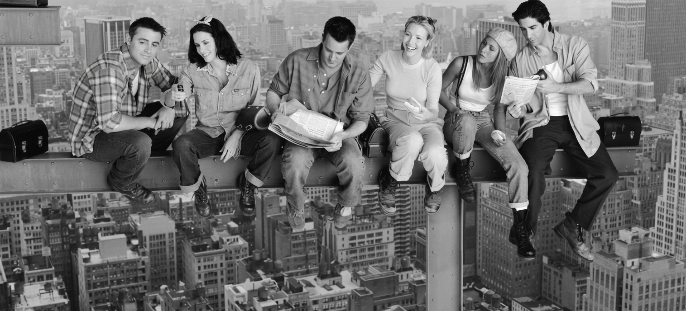

Saltar al contenido
Inicio
Personajes
Temporadas
Galería
☰

Bienvenidos a Central Perk
Seis amigos, un sillón naranja y un millón de momentos inolvidables.
10
temporadas
6
amigos
1
café de siempre
Activá JavaScript para el carrusel, el mapa seleccionable y la música.